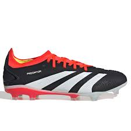

Productos


 Adidas es una de las marcas deportivas más reconocidas a nivel mundial, fundada en 1949 por Adolf Dassler en Alemania. Adolf Dassler, conocido como Adi, tenía una pasión por el deporte y un profundo deseo de ayudar a los atletas a alcanzar su máximo potencial.
Desde sus humildes comienzos en la lavandería de su madre, donde comenzó a fabricar zapatos deportivos con materiales reciclados al finalizar la Segunda Guerra Mundial, Adi Dassler siempre tuvo una visión clara: proporcionar el mejor calzado y equipo deportivo para mejorar el rendimiento de los atletas.
Con innovación, dedicación y un enfoque inquebrantable en la calidad, Adidas se convirtió en un referente en el mundo del deporte. Desde patrocinar a grandes deportistas hasta colaborar con diseñadores de renombre mundial, la marca ha sabido fusionar la moda y el rendimiento deportivo de manera única.
A lo largo de los años, Adidas ha demostrado que el trabajo arduo, la pasión por lo que haces y la constante búsqueda de la excelencia son clave para alcanzar el éxito. Su lema "Impossible is Nothing" refleja la mentalidad de superación y perseverancia que ha caracterizado a la empresa desde sus inicios.
Hoy en día, Adidas sigue siendo un referente en la industria del deporte y la moda, inspirando a millones de personas en todo el mundo a través del poder del deporte y el estilo. Su legado es un recordatorio constante de que con determinación, creatividad y trabajo en equipo, ¡todo es posible!
¡Siempre hacia adelante y sin límites!
Adidas es una de las marcas deportivas más reconocidas a nivel mundial, fundada en 1949 por Adolf Dassler en Alemania. Adolf Dassler, conocido como Adi, tenía una pasión por el deporte y un profundo deseo de ayudar a los atletas a alcanzar su máximo potencial.
Desde sus humildes comienzos en la lavandería de su madre, donde comenzó a fabricar zapatos deportivos con materiales reciclados al finalizar la Segunda Guerra Mundial, Adi Dassler siempre tuvo una visión clara: proporcionar el mejor calzado y equipo deportivo para mejorar el rendimiento de los atletas.
Con innovación, dedicación y un enfoque inquebrantable en la calidad, Adidas se convirtió en un referente en el mundo del deporte. Desde patrocinar a grandes deportistas hasta colaborar con diseñadores de renombre mundial, la marca ha sabido fusionar la moda y el rendimiento deportivo de manera única.
A lo largo de los años, Adidas ha demostrado que el trabajo arduo, la pasión por lo que haces y la constante búsqueda de la excelencia son clave para alcanzar el éxito. Su lema "Impossible is Nothing" refleja la mentalidad de superación y perseverancia que ha caracterizado a la empresa desde sus inicios.
Hoy en día, Adidas sigue siendo un referente en la industria del deporte y la moda, inspirando a millones de personas en todo el mundo a través del poder del deporte y el estilo. Su legado es un recordatorio constante de que con determinación, creatividad y trabajo en equipo, ¡todo es posible!
¡Siempre hacia adelante y sin límites!
El deporte nos mantiene en forma. Te mantiene atento. Nos une. A través del deporte podemos cambiar vidas. Ya sea a través de historias de atletas inspiradores. Animándote a ponerte en marcha. Ofreciéndote artículos deportivos con las últimas tecnologías para mejorar tu rendimiento. Superá tu mejor marca personal. adidas es el hogar del corredor, del jugador de básquet, del joven futbolista y del entusiasta del fitness. Del aventurero que escapa de la ciudad los fines de semana. De la instructora de yoga que enseña nuevas posturas. Las 3 Tiras se ven en el mundo de la música. En el escenario, en los festivales. Nuestra ropa deportiva para mujer y para hombre te mantiene concentrado antes de que suene el silbato. Durante la carrera. Y en la línea de meta. Apoyamos a los creadores. Estamos aquí para apoyar a los creadores. Sus vidas. Y cambiar el mundo.
adidas es mucho más que ropa deportiva y ropa de entrenamiento. Somos la gente que confian en nosotros . De esta manera, ofrecemos a nuestras seguidores la ropa deportiva y los estilos que mejor se adaptan a sus necesidades deportivas, sin dejar de lado la sostenibilidad. Apoyamos a los creadores Mejorar su juego. Creamos el cambio. Y pensamos en el impacto que tenemos en nuestro mundo.